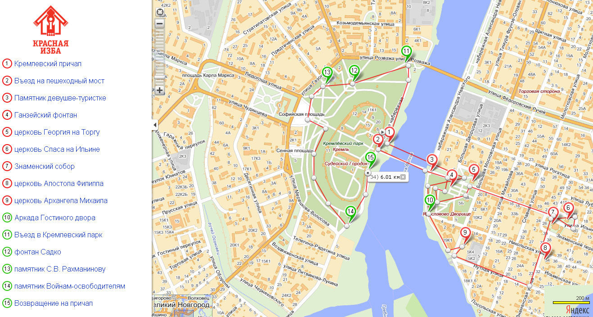

Карта достопремечательностей
Туристский информационный центр «Красная Изба» поможет гостям города сделать путешествие в Великий Новгород комфортным и максимально интересным.
Контакты центра «Красная изба»:
Адрес: Сенная пл. 5, Великий Новгород, 173007
Время работы: 9:30 – 18:00 (ежедневно)
Телефон: +7 905 290 86 86
Электронная почта: info@visitnovgorod.ru